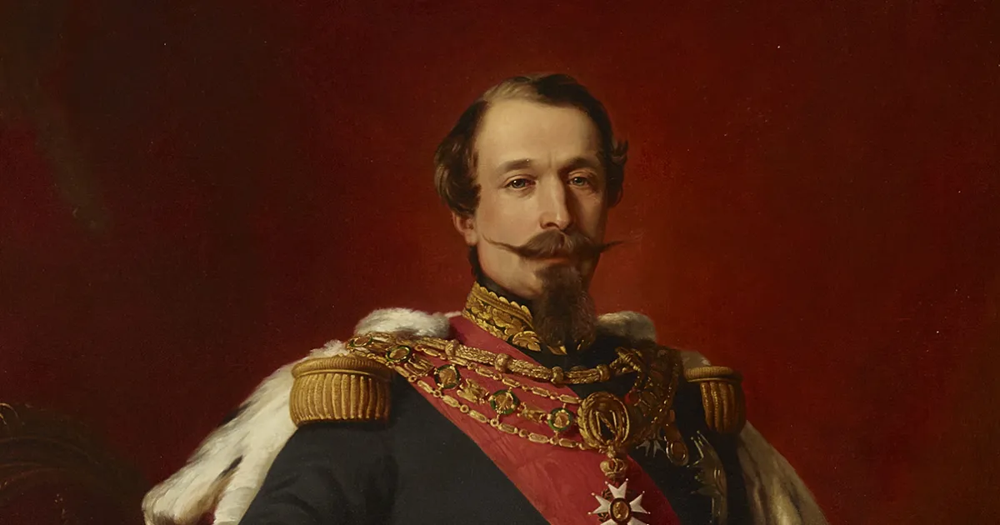

Second French Republic History
How It Began (1848)
In February 1848, economic crisis, unemployment, and demands for political reform led to the February Revolution in Paris. King Louis-Philippe I abdicated and fled.
France declared a republic once again, creating the Second French Republic.

Major Reforms
The new republic introduced several important changes:
Unversal male suffrage (all adult men could vote)
Abolition of slavery in French colonies
Freedom of the press and assembly
Creationg of "National Workshops" to provide jobs for the unemployed
However, the National Workshops were expensive and controversial. When they were shut down, it triggered the violent June Days Uprising in 1848, where workers revolted and were suppressed by the army.
Election of Louis-Napoleon
In December 1848, Louis-Napoleon Bonaparte (nephew of Napoleon Bonaparte) was elected president by a huge majority. He was popular because of his famous name and promises of stability.
But undert the constitution, presidents could only server one four-year term.
But under the constitution, presidents could only server one four-year term.
End of the Second Republic (1852)
in 1851, Louis-Napoleon staged a coup d'état to stay in power. One year later, he declared himself Emperor Napoleon III, creating the Second French Empire.
This ended the Second French Republic after only four years.